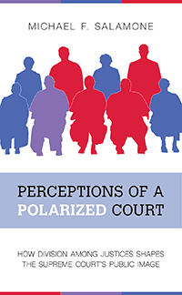

<HTML><head><script> (function(i,s,o,g,r,a,m){i['GoogleAnalyticsObject']=r;i[r]=i[r]||function(){  (i[r].q=i[r].q||[]).push(arguments)},i[r].l=1*new Date();a=s.createElement(o),  m=s.getElementsByTagName(o)[0];a.async=1;a.src=g;m.parentNode.insertBefore(a,m)   })(window,document,'script','//www.google-analytics.com/analytics.js','ga');   ga('create', 'UA-43183130-1', 'temple.edu');   ga('send', 'pageview'); </script><title>Michael F. Salamone: Perceptions of a Polarized Court - Print</TITLE><link rel="stylesheet" href="../general.css" type="text/css"><SCRIPT LANGUAGE = JAVASCRIPT></SCRIPT></HEAD><BODY LINK="#3152A5" VLINK="#3152A5" ALINK=Gray BGCOLOR=White><CENTER><P CLASS=intro><br>Is the Supreme Court immune to the stain of polarization?<br><br></P></CENTER><br>&nbsp;<!--none//--><Table width="100%" border=0 cellspacing=5><tr><td width="175" align="center"></td><td><h1 class = "booktitle">Perceptions of a Polarized Court</h1> <h1 class = "subtitle">How Division among Justices Shapes the Supreme Court's Public Image</h1><h3 class="author">Michael F. Salamone </h3><p class="info">paper EAN: 978-1-4399-1695-7 (ISBN:1-4399-1695-0)</br>$32.95, Oct 18, <font color=#990033>Not Yet Published Preorder</font><br><p class="info">cloth EAN:  978-1-4399-1694-0 (ISBN:1-4399-1694-2)</br>$94.50, Oct 18, <font color=#990033>Not Yet Published Preorder</font><br><p class="info">Electronic Book EAN: 978-1-4399-1696-4 (ISBN:1-4399-1696-9)</br>$32.95, Oct 18, <font color=#990033>Not Yet Published Preorder</font><br><p class="info">206 pp, 5.25 x  8.5, 8&nbsp;figures 27 tables, 8 figs., 4 line drawings</p></td></tr></table></P></td></tr></table><BR><BLOCKQUOTE></BLOCKQUOTE><P><P><p>Like our divided nation, the Supreme Court is polarized. But does a split among Supreme Court justices-particularly when it occurs along ideological lines-hurt public perception and the Court's ability to muster popular support for its rulings? Michael Salamone's <i>Perceptions of a Polarized Court </i>offers the first comprehensive, empirical analysis of how divisiveness affects the legitimacy of the Court's decisions.<br/><br/>Salamone looks specifically at the Roberts Court years-which are characterized by unprecedented ideological and partisan polarization among the justices-to evaluate the public consequences of divided Supreme Court rulings. He also analyzes both the media's treatment of Supreme Court decisions and public opinion toward the Court's rulings to show how public acceptance is (or is not) affected. <br/><br/>Salmone contends that judicial polarization has had an impact on the manner in which journalists report on the Supreme Court. However, contrary to expectation, Court dissent may help secure public support by tapping into core democratic values.<br><P CLASS="top"><A HREF="#top">BACK TO TOP</A></P></p><P></p><p></b></p><BR><p></p></P><BR>&nbsp;<p><P><H2  class="inpageheading"><A NAME="author bio"></a>About the Author(s)</H2><p><b>Michael F. Salamone</b> is an Assistant Professor of Political Science in the School of Politics, Philosophy, and Public Affairs at Washington State University.<br><P CLASS="top"><A HREF="#top">BACK TO TOP</A></P></P><p><h2 class="inpageheading"><a name="subjects"></a>Subject Categories</h2> <p><a href="http://www.temple.edu/tempress/political.html" target="_top">Political Science and Public Policy</a> <br><a href="http://www.temple.edu/tempress/law.html" target="_top">Law and Criminology</a> <br><a href="" target="_top"></a> <br><a href="" target="_top"></a> <br><a href="" target="_top"></a> </p></p><P></P><P>&nbsp;</P><font face="Arial" size="1"><a href="copyright.html" OnMouseOver="window.status='Web Copyright Policy';return true;" OnMouseOut="window.status=''" TITLE="Web Copyright Policy">&copy;</a> 2018 <a href="http://www.temple.edu" target="new" OnMouseOver="window.status='Link to Temple University home page';return true;" OnMouseOut="window.status=''" TITLE="Link to Temple University home page">Temple University</a>. All Rights Reserved. This page: <a href="http://www.temple.edu/tempress/titles/2523_reg.html"OnMouseOver="window.status='Link to the book page';return true;" OnMouseOut="window.status=''" TITLE="Link to the book page">http://www.temple.edu/tempress/titles/2523_reg.html.</a></font></BODY></HTML>                    
